Overview#
Create the simulation#
from functools import partial
import numpy as np
from lucifex.fem import average_grid, cross_section_grid
from lucifex.fdm import GridFunctionSeries, NPyConstantSeries
from lucifex.io import write
from lucifex.sim import run, xdmf_to_npz
from lucifex.plt import (
plot_colormap, create_animation, plot_line, save_figure, plot_twin_lines,
display_animation, get_ipynb_file_name, set_ipynb_variable, create_multifigure,
)
from lucifex.utils.fenicsx_utils import mesh_axes
from lucifex.utils.npy_utils import as_index, derivative
from crocodil.dns.system_a import dns_system_a, SYSTEM_A_REFERENCE
from crocodil.theory.system_a import (
critical_saturation, mass_dissolved_asymptote, mass_capillary_asymptote,
mass_dissolved_initial, mass_capillary_initial,
)
from crocodil.theory.grid_resolution import threshold_rayleigh
STORE = 1
WRITE = None
DIR_ROOT = f'./figures/{get_ipynb_file_name()}'
NX = set_ipynb_variable('NX', 60)
NY = set_ipynb_variable('NY', 60)
ANIM = set_ipynb_variable('ANIM', False)
simulation = dns_system_a(
store_delta=STORE,
write_delta=WRITE,
dir_root=DIR_ROOT,
dir_uid=True,
)(
Nx=NX,
Ny=NY,
scaling='advective',
**SYSTEM_A_REFERENCE.replace(Ra=800.0),
dt_max=0.1,
dt_Cu=0.75,
dt_Cd=0.75,
dt_Cr=0.1,
c_stabilization=None,
c_limits=True,
diagnostic=True,
)
Lx, Ly = simulation['Lx', 'Ly']
Ra, Da, epsilon, zeta0, sr, cr = (
float(i) for i in simulation['Ra', 'Da', 'epsilon', 'zeta0', 'sr', 'cr']
)
Ra_thresh = threshold_rayleigh(Lx, Ly, NX, 2)
print(f"Ra = {Ra} , Ra_thresh = {Ra_thresh}")
sr_crit = critical_saturation(zeta0, cr, epsilon)
print(f'sr = {sr} , sr_crit = {sr_crit}')
save_fig = partial(save_figure, dir_path=simulation.dir_path, prefix=False)
Ra = 800.0 , Ra_thresh = 1350.0
sr = 0.2 , sr_crit = 0.10000000000000002
Run the simulation#
n_stop = set_ipynb_variable('N_STOP', 200)
t_stop = 100.0
dt_init = 1e-6
n_init = 10
run(simulation, n_stop=n_stop, t_stop=t_stop, dt_init=dt_init, n_init=n_init, show_progress=True)
if WRITE:
xdmf_to_npz(simulation, delete_xdmf=False)
else:
write(simulation.parameters, simulation.parameter_file, simulation.dir_path, mode='w')
s, c, psi, u = simulation['s', 'c', 'psi', 'u']
mC, mD, f = simulation['mC', 'mD', 'f']
fZeta0, fZetaPlus, fZetaMinus = f.split()
Environment variable `N_STOP=200`
Visualization#
Concentration#
_display = None
if not ANIM:
time_indices = as_index(c.time_series, (0, 0.5, -1), fraction=True)
for i in time_indices:
fig, ax = plot_colormap(c.series[i], title=f'$c(t={c.time_series[i]:.3f})$')
else:
time_slice = slice(0, None, 2)
titles = [f'${c.name}(t={t:.3f})$' for t in c.time_series[time_slice]]
anim = create_animation(
plot_colormap,
colorbar=False,
)(c.series[time_slice], title=titles)
anim_path = save_fig(f'{c.name}(t)', return_path=True)(anim)
_display = display_animation(anim_path)
_display
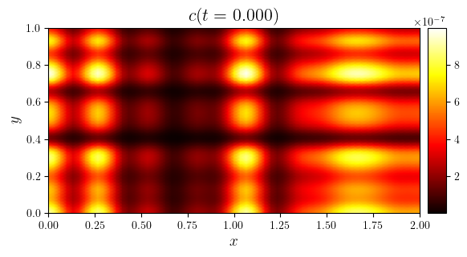
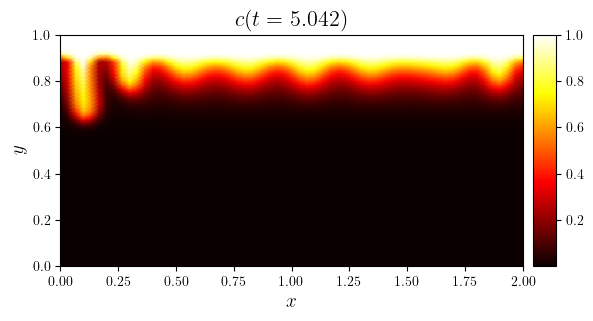
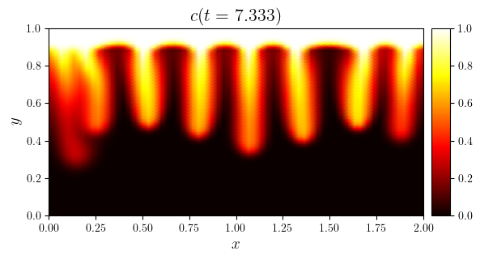
Saturation#
_display = None
if not ANIM:
time_indices = as_index(s.time_series, (0, 0.5, -1), fraction=True)
for i in time_indices:
fig, ax = plot_colormap(s.series[i], title=f'$s(t={s.time_series[i]})$')
else:
time_slice = slice(0, None, 2)
titles = [f'${s.name}(t={t:.3f})$' for t in s.time_series[time_slice]]
anim = create_animation(
plot_colormap,
colorbar=(0, sr),
y_lims=(zeta0 * Ly, Ly),
aspect='auto',
)(s.series[time_slice], title=titles)
anim_path = save_fig(f'{s.name}(t)', return_path=True)(anim)
_display = display_animation(anim_path)
_display
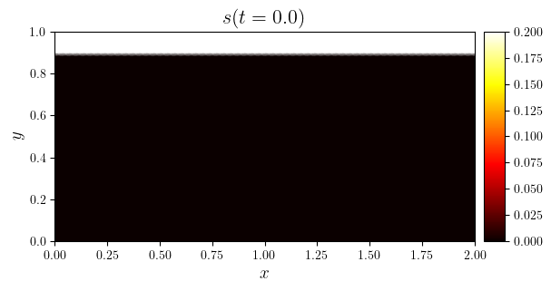
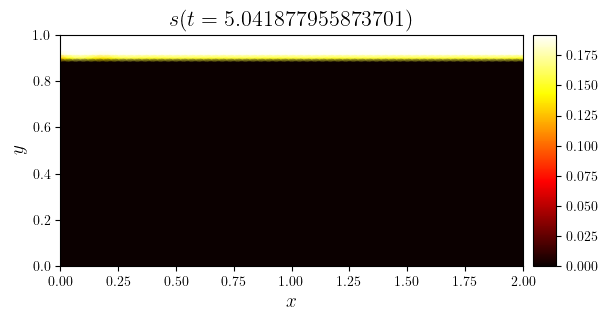
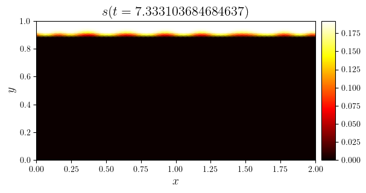
Physical diagnostics#
Mass#
mC_initial = mass_capillary_initial(epsilon, zeta0, sr, Lx, Ly)
mD_initial = mass_dissolved_initial(zeta0, sr, cr, Lx, Ly)
m_initial = mC_initial + mD_initial
mC_asymp = mass_capillary_asymptote(m_initial, epsilon, Lx, Ly)
mD_asymp = mass_dissolved_asymptote(m_initial, epsilon, Lx, Ly)
mfig, axs, _ = create_multifigure(n_cols=2)
plot_line(
mfig, axs[0],
(mC.time_series, mC.value_series),
x_label='$t$',
y_label='$m_C$',
)
axs[0].hlines(
[mC_initial, mC_asymp],
0, max(mC.time_series),
linestyles='dotted', colors='black', linewidths=0.75,
)
plot_line(
mfig, axs[1],
(mD.time_series, mD.value_series),
x_label='$t$',
y_label='$m_D$'
)
axs[1].hlines(
[mD_initial, mD_asymp],
0, max(mD.time_series),
linestyles='dotted', colors='black', linewidths=0.75,
)
save_fig('mCmD(t)')(mfig)
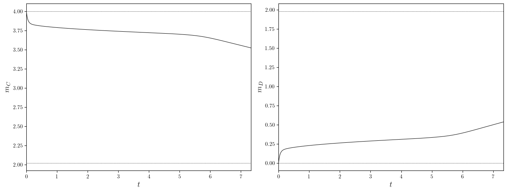
Flux#
fMass = -(1 / Lx) * derivative(mC.value_series, mC.time_series)
fZeta0Sum_series = [np.sum(i) for i in fZeta0.value_series]
f_lims = (min(fZeta0Sum_series), max(fZeta0Sum_series))
f_scale = max(*np.abs(f_lims))
y_lims = (f_lims[0] - 0.1 * f_scale, f_lims[1] + 0.5 * f_scale)
lines = [
(mC.time_series, -fMass),
(fZeta0.time_series, fZeta0Sum_series),
(fZeta0.time_series, fZeta0.value_series),
]
legend_labels = [
'$-F^m_{y=\zeta_0}$',
'$F_{y=\zeta_0}$',
'$F^{\mathbf{u}}_{y=\zeta_0}$',
'$F^{\mathsf{D}}_{y=\zeta_0}$',
]
fig, ax = plot_line(
lines,
cyc='black',
x_label='$t$',
legend_labels=legend_labels,
y_lims=y_lims,
)
if np.max(fZeta0.time_series) > 50.0:
ax.set_xscale('log')
save_fig(f'f(y=zeta0,t)')(fig)
superscripts = ('', '^+', '^-')
mfig, axs, _ = create_multifigure(n_cols=3)
for i, (flx, sup) in enumerate(zip((fZeta0, fZetaPlus, fZetaMinus), superscripts)):
plot_line(
mfig, axs[i],
[
(flx.time_series, [np.sum(i) for i in flx.value_series]),
(flx.time_series, flx.value_series),
],
x_label='$t$',
# x_lims=fZeta0.time_series,
legend_labels = [
'$F_{y=\zeta_0}$',
'$F^{\mathbf{u}}_{y=\zeta_0*}$'.replace('*', sup),
'$F^{\mathsf{D}}_{y=\zeta_0*}$'.replace('*', sup),
],
)
save_fig(f'fMass(t)')(fig)
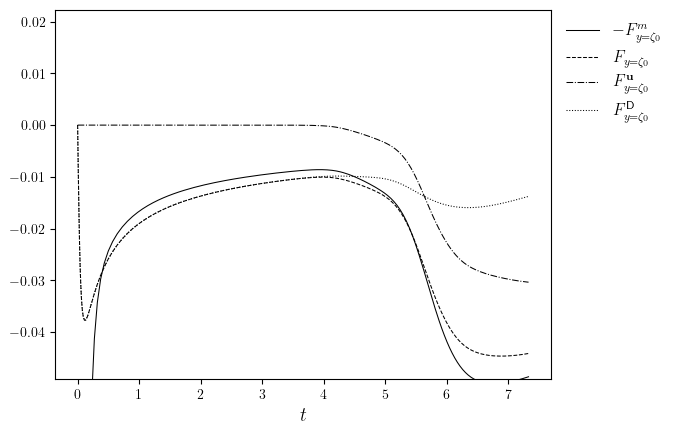
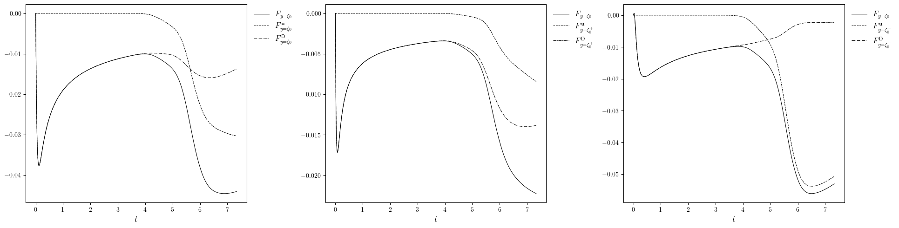
Horizontal averages#
sAvgX = GridFunctionSeries(average_grid(s.series, 'x'), s.time_series, 'sAvgX')
cAvgX = GridFunctionSeries(average_grid(c.series, 'x'), c.time_series, 'cAvgX')
mfig, axs, _ = create_multifigure(n_cols=2)
plot_line(
mfig, axs[0],
cAvgX.series,
cyc='jet',
legend_title='$t$',
legend_labels=(min(cAvgX.time_series), max(cAvgX.time_series)),
x_label='$\langle c\\rangle_x$',
y_label='$y$',
flip=True,
y_lims=(0, Ly),
)
plot_line(
mfig, axs[1],
sAvgX.series,
cyc='jet',
legend_title='$t$',
legend_labels=(min(sAvgX.time_series), max(sAvgX.time_series)),
x_label='$\langle s\\rangle_x$',
y_label='$y$',
flip=True,
y_lims=(zeta0 * Ly - 0.5 * (1 - zeta0) * Ly, Ly),
)
axs[1].hlines(zeta0 * Ly, 0, sr, linestyles='dotted', colors='black', linewidths=0.75)
save_fig('xAvgX(t)_sAvgX(t)')(fig)
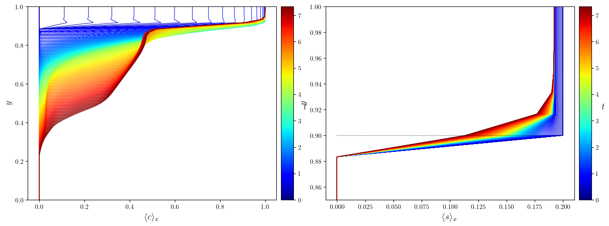
Subdomain averages#
y_axis = mesh_axes(use_cache=True)(c.mesh)[1]
zeta0_index = as_index(y_axis, zeta0)
slcPlus = slice(zeta0_index, None)
slcMinus = slice(0, zeta0_index)
cPlus = NPyConstantSeries(
average_grid(c.series, ('x', 'y'), (':', slcPlus)), c.time_series, 'cPlus',
)
cMinus = NPyConstantSeries(
average_grid(c.series, ('x', 'y'), (':', slcMinus)), c.time_series, 'cMinus',
)
sPlus = NPyConstantSeries(
average_grid(s.series, ('x', 'y'), (':', slcPlus)), s.time_series, 'sPlus',
)
mfig, axs, _ = create_multifigure(n_cols=3)
plot_line(
mfig, axs[0],
(cPlus.time_series, cPlus.value_series),
x_label='$t$',
y_label='$c^+$',
)
plot_line(
mfig, axs[1],
(cMinus.time_series, cMinus.value_series),
x_label='$t$',
y_label='$c^-$',
)
plot_line(
mfig, axs[2],
(sPlus.time_series, sPlus.value_series),
x_label='$t$',
y_label='$s^+$',
)
save_fig('cPlus(t)_cMinus(t)_sPlus(t)')(mfig)
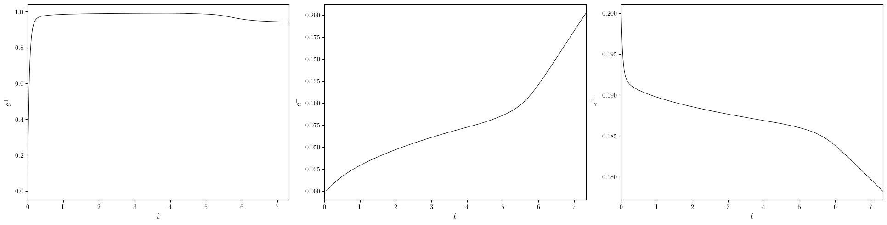
Correlation#
time_index = int(0.5 * n_stop)
y_cs_target = 0.95
cx, y_cs = cross_section_grid(c.series[time_index], 'y', y_cs_target)
sx, y_cs = cross_section_grid(s.series[time_index], 'y', y_cs_target)
fig, ax = plot_twin_lines(
(cx, sx),
twin_labels=(f'$c(y={y_cs})$', f'$s(y={y_cs})$')
)
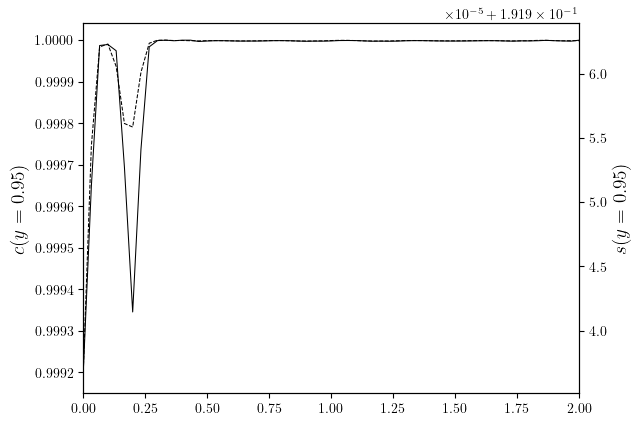
Velocity norms#
uRMS, uMinMax, uDiv = simulation['uRMS', 'uMinMax', 'uDiv']
uMax = uMinMax.sub(1)
mfig, axs, _ = create_multifigure(n_cols=3)
plot_line(
mfig, axs[0],
(uRMS.time_series, uRMS.value_series),
x_label='$t$',
y_label='$\mathrm{rms}(\mathbf{u})$',
)
axs[0].set_yscale('log')
plot_line(
mfig, axs[1],
(uMax.time_series, uMax.value_series),
x_label='$t$',
y_label='$\max_{\mathbf{x}}|\mathbf{u}|$',
)
axs[1].set_yscale('log')
plot_line(
mfig, axs[2],
(uDiv.time_series, uDiv.value_series),
x_label='$t$',
y_label='$\mathrm{divn}(\mathbf{u})$',
)
save_fig('uRMS(t)_uMax(t)_uDiv(t)')(mfig)
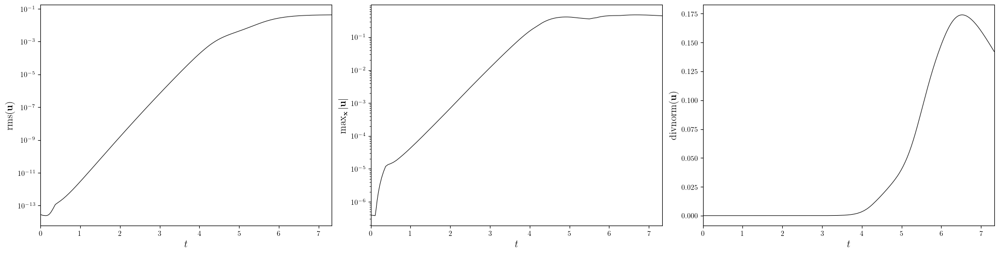
Numerical diagnostics#
Timestep contraints#
dt, dtU, dtD, dtSigma = simulation['dt', 'dtU', 'dtD', 'dtSigma']
fig, ax = plot_line(
[
(dt.time_series, dt.value_series),
(dtU.time_series, dtU.value_series),
(dtD.time_series, dtD.value_series),
(dtSigma.time_series, dtSigma.value_series),
],
x_label='$t$',
legend_labels=['$\Delta t$', '$\Delta t_{\mathbf{u}}$', '$\Delta t_{\mathsf{D}}$', '$\Delta t_{\Sigma}$'],
)
ax.set_yscale('log')
save_fig('dt(t)')(fig)
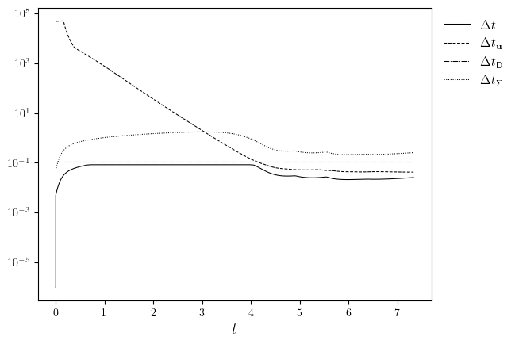
Concentration limits#
cMinMax = simulation['cMinMax']
cMin, cMax = cMinMax.split()
n_cols = 3 if 'cCorr' in simulation.namespace else 2
mfig, axs, _ = create_multifigure(n_cols=n_cols)
plot_line(
mfig, axs[0],
(cMax.time_series, cMax.value_series),
x_label='$t$',
y_label='$\max_{\mathbf{x}}c$',
y_lims=(1-0.1, 1+0.1),
)
plot_line(
mfig, axs[1],
(cMin.time_series, cMin.value_series),
x_label='$t$',
y_label='$\min_{\mathbf{x}}c$',
)
if n_cols == 3:
cCorr = simulation['cCorr']
plot_line(
mfig, axs[1],
[
(cCorr.time_series, [np.min(i) for i in cCorr.dofs_series]),
(cCorr.time_series, [np.max(i) for i in cCorr.dofs_series]),
],
x_label='$t$',
legend_labels=['$\min_{\mathbf{x}}\mathcal{C}(c)$', '$\max_{\mathbf{x}}\mathcal{C}(c)$'],
)
save_fig('cMin(t)_cMax(t)')(fig)
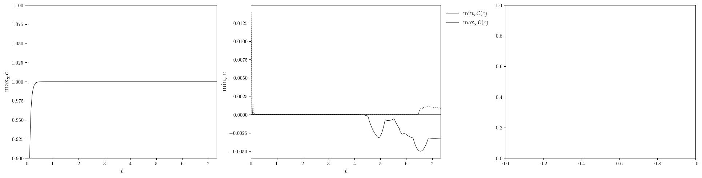
Mass conservation#
m_sum = np.array([i + j for i, j in zip(mC.value_series, mD.value_series)]) - 1
fig, ax = plot_line(
(mC.time_series, m_sum / m_sum[0]),
x_label='$t$',
y_label='$(m_C + m_D)/m_0 - 1$'
)
save_figure('m(t)_normalized', simulation.dir_path, prefix=False)(fig)
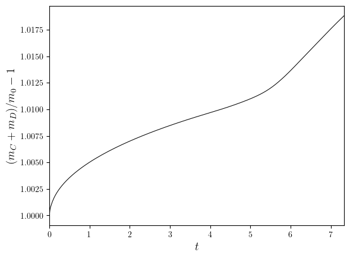
Thumbnail image#
time_index = -1
fig, ax = plot_colormap(c.series[time_index], title=f'$c(t={c.time_series[time_index]})$')
save_figure('thumbnail', DIR_ROOT, prefix=False)(fig, file_ext='png')
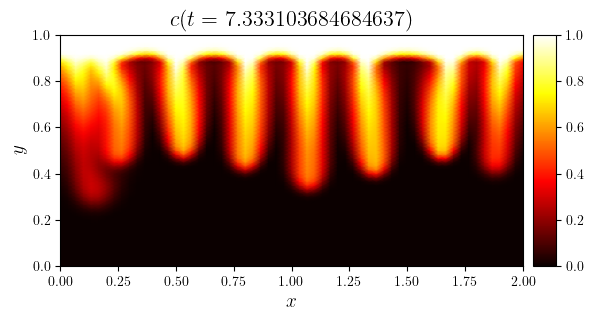